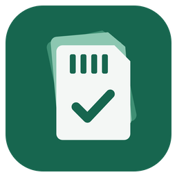

SaveVault
A small Windows app that finds your game saves, backs them up when you quit a game, and keeps copies in your own Google Drive.
What it does
- Finds save files for thousands of PC games, from Steam, Epic, GOG and elsewhere.
- Backs up a game automatically a few seconds after you close it, and keeps several older versions.
- Restores any version, and always keeps a copy of your current save first.
- Optionally copies backups to your Google Drive so you can restore them on another PC.
Google Drive access
SaveVault only asks for access to the files it creates itself (a folder called SaveVault in your Drive). It can't see or change any of your other files. Read the privacy policy.